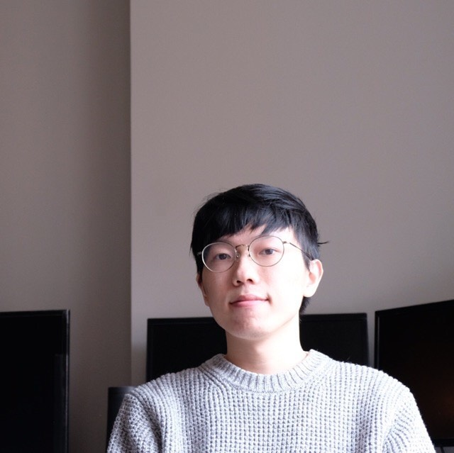

Perception
認識能力
Home
CV
Blog

Yu, Zi-Shun
Address
: 900 W Taylor St, Chicago, IL 60605
E-mail
:
zyu32@uic.edu
Github
:
github.com/ZishunYu
IPA of my first name
: [tsž̩ː] [ʂʷə̀n]
I am a second-year Ph.D. student in the Department of Mechanical and Industrial Engineering at University of Illinois at Chicago. I am advised by
Dr. Mengqi Hu
in the
Complex System Informatics Laboratory (CSILab)
.
I am broadly interesed in machine learning, and in particular, reinforcement learning, multi-agent learning and graph neural network.
Publications
Article Title
[PDF]
John Doe
Journal
, Date
Talks
Learning-Based Automatic Controller Design for Mobile Robot Navigation
[PDF]
[Blog]
INFORMS Annual Meeting
, Phoenix, Nov. 2018
Teaching
[IE 365] Work Productivity Analysis
Lab Instructor, University of Illinois at Chicago, Fall 2019
[IE 345] Regression Applications and Forecasting in Engineering
Teaching Asistant, University of Illinois at Chicago, Fall 2018
[IE 201] Financial Engineering
Teaching Asistant, University of Calgary, Winter 2018
[IE 201] Financial Engineering
Teaching Asistant, University of Illinois at Chicago, Spring 2018